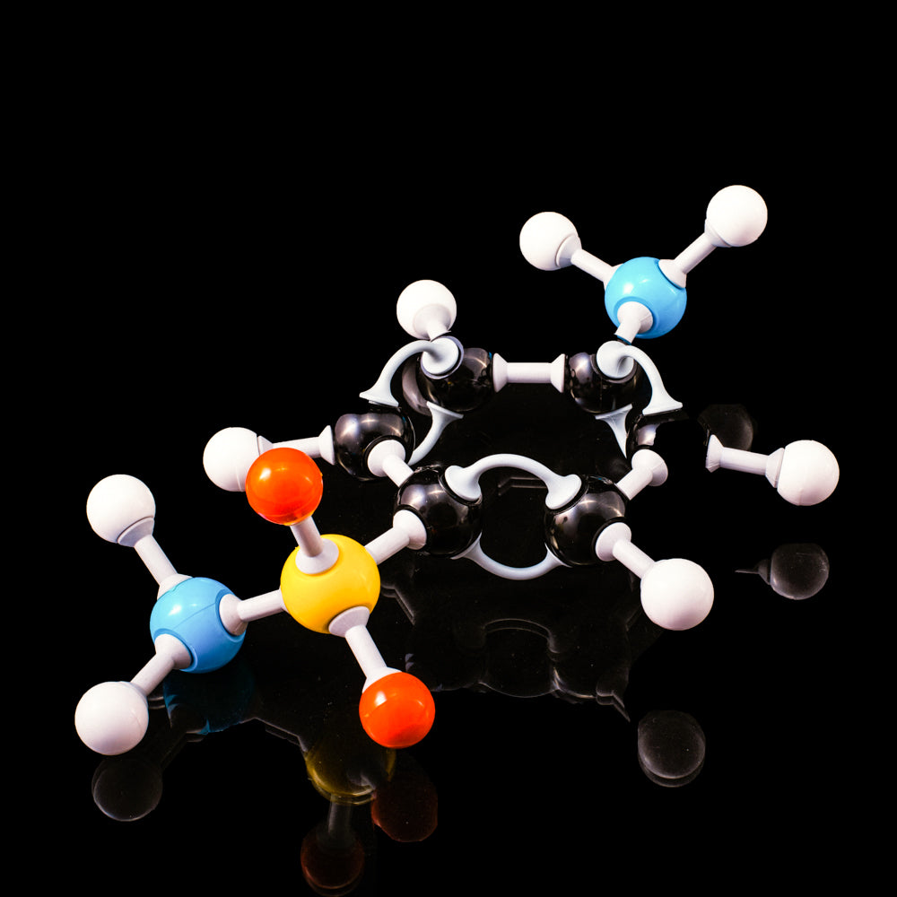
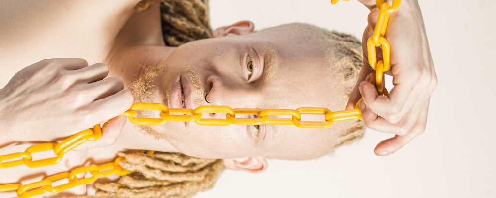

Peroxyde de benzoyle : les avantages

Le peroxyde de benzoyle est un ingrédient commun que l'on trouve dans de nombreux produits cosmétiques et de soins de la peau. C'est un traitement efficace contre l'acné qui peut aider à réduire l'apparence des imperfections et à prévenir de futures éruptions cutanées.
Les avantages
Voici une liste non exhaustive de ses avantages :
- Le peroxyde de benzoyle est un traitement efficace contre l'acné qui peut aider à réduire l'apparence des imperfections et à prévenir les éruptions futures.
- Il aide à déboucher les pores, ce qui peut réduire le risque de développer des points noirs et des points blancs.
- Il a des propriétés antibactériennes qui peuvent aider à tuer les bactéries qui causent l'acné.
- C'est un exfoliant puissant qui peut aider à éliminer les cellules mortes de la peau et autres impuretés de la surface de la peau.
- Il peut aider à réduire l'inflammation et les rougeurs associées aux poussées d'acné.
- Il est non comédogène, ce qui signifie qu'il n'obstrue pas les pores et ne provoque pas d'autres éruptions cutanées.
- Il est suffisamment doux pour les peaux sensibles, ce qui le rend adapté à tous les types de peau.

Conseils d'utilisation
Voici quelques conseils sur la façon d'utiliser le peroxyde de benzoyle dans les cosmétiques en toute sécurité et efficacement :
- Commencez avec une concentration plus faible de peroxyde de benzoyle (2 à 5 %) et augmentez progressivement au fur et à mesure que votre peau s'adapte au produit.
- N'utilisez qu'une quantité de produit de la taille d'un pois sur les zones touchées, en évitant tout contact avec les yeux, les lèvres et les autres zones sensibles du visage ou du corps.
- Appliquez le produit après avoir nettoyé votre visage ou votre corps avec un nettoyant doux et séchez avec une serviette ou un chiffon propre avant d'appliquer tout autre produit de soin de la peau tel que des hydratants ou des sérums si vous le souhaitez.
- Évitez d'utiliser du peroxyde de benzoyle plus de deux fois par jour car cela peut entraîner une sécheresse, une irritation ou une rougeur de la peau
- Si vous ressentez des effets indésirables tels que brûlures, démangeaisons, rougeurs, gonflements ou éruptions cutanées, arrêtez immédiatement l'utilisation et consultez votre médecin si nécessaire.
En suivant ces conseils, vous pouvez utiliser en toute sécurité le peroxyde de benzoyle dans les cosmétiques pour traiter les poussées d'acné tout en minimisant les effets secondaires potentiels associés à son utilisation.
Mesure de sécurité
- Le peroxyde de benzoyle est généralement considéré comme sûr pour une utilisation dans les cosmétiques, mais il peut provoquer une irritation cutanée chez certaines personnes.
- Il est important de tester tout nouveau produit contenant du peroxyde de benzoyle avant de l'utiliser sur une plus grande surface de la peau.
- Évitez tout contact avec les yeux, les lèvres et les autres zones sensibles du visage ou du corps lors de l'application de produits à base de peroxyde de benzoyle.
- Si vous ressentez des effets indésirables tels que brûlures, démangeaisons, rougeurs, gonflements ou éruptions cutanées, arrêtez immédiatement l'utilisation et consultez votre médecin si nécessaire.
En suivant ces conseils de sécurité, vous pouvez vous assurer que vous utilisez le peroxyde de benzoyle dans les cosmétiques de manière sûre et efficace pour traiter les poussées d'acné tout en minimisant les effets secondaires potentiels associés à son utilisation.
Pour conclure, le peroxyde de benzoyle est un ingrédient commun que l'on trouve dans de nombreux produits cosmétiques et de soins de la peau. C'est un traitement efficace contre l'acné qui peut aider à réduire l'apparence des imperfections et à prévenir de futures éruptions cutanées.
Il est important d'utiliser le peroxyde de benzoyle de manière sûre et efficace en suivant les conseils décrits dans cet article.
Ce faisant, vous pouvez vous assurer que vous utilisez le peroxyde de benzoyle dans les cosmétiques de manière sûre et efficace pour traiter les poussées d'acné tout en minimisant les effets secondaires potentiels associés à son utilisation.